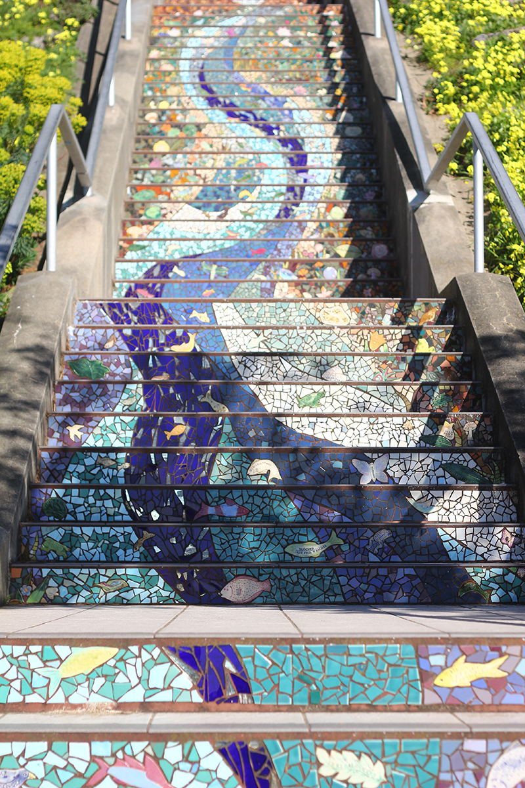
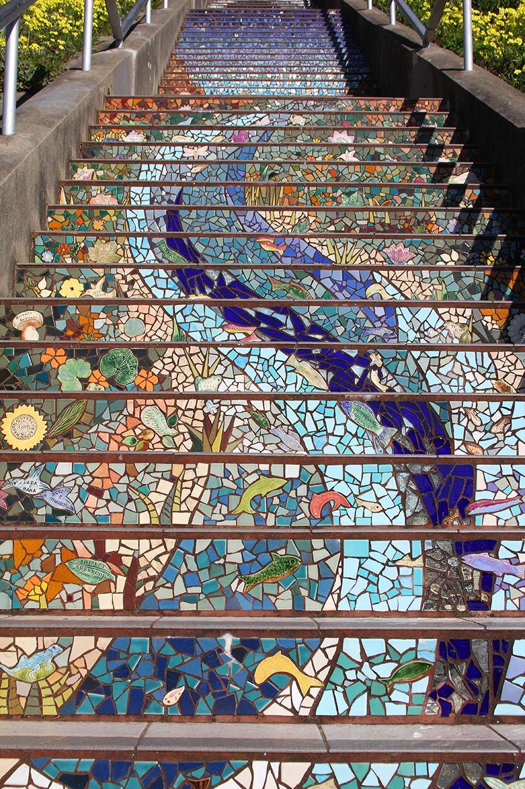
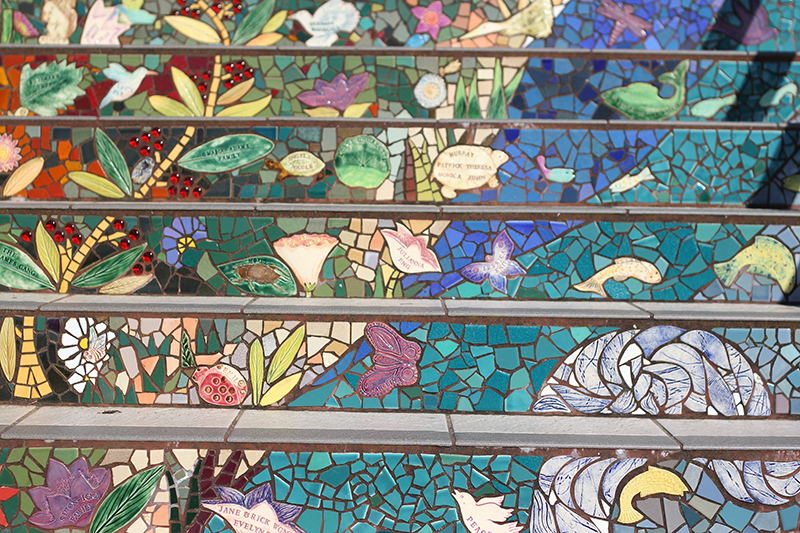
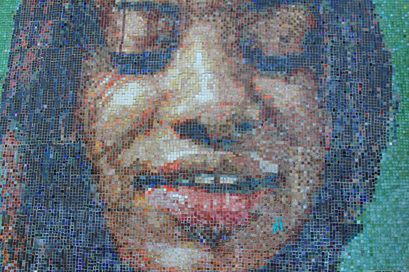
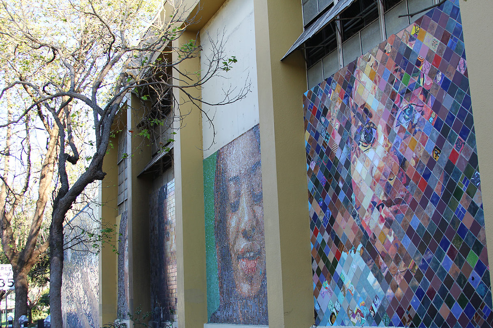
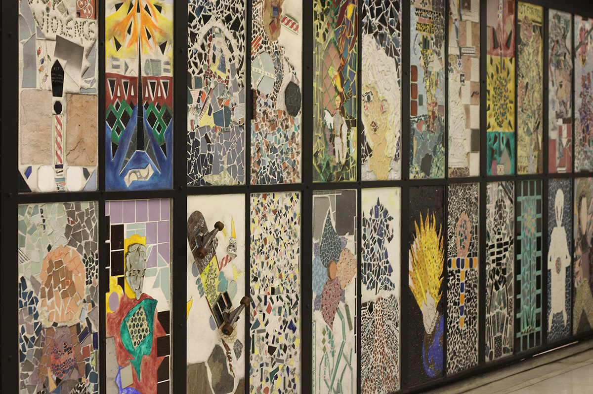
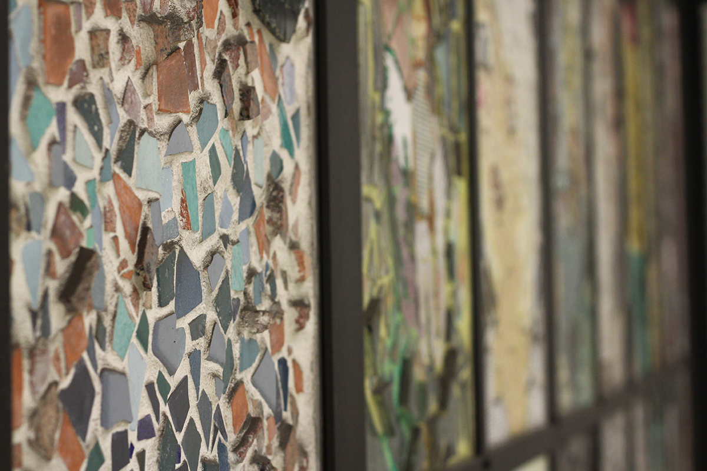

a living archive of art in public spaces



The 16th Avenue Tiled Steps
Ticket: Free
Details: 163 steps
Location: 1700 16th Ave (between Noriega St & Moraga St)


Ben Franklin Middle's Kid Serve Mosaic Murals
Ticket: Free
Artists: Local students & Josef Norris
Location: 1430 Scott Street (on the side of Geary Boulevard)


BART/MUNI Powell St. Station
Ticket: Free
Details: ninety-six panels, set in 24 sections.
Location: Underground Station near Hallidie Plaza at Market/Fifth Sts.